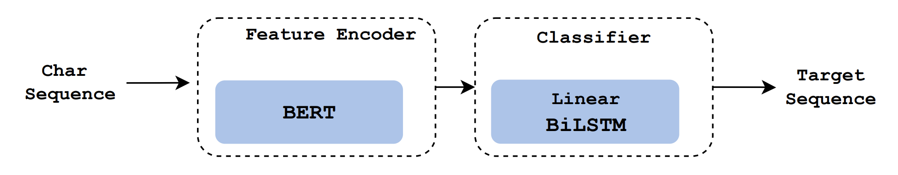
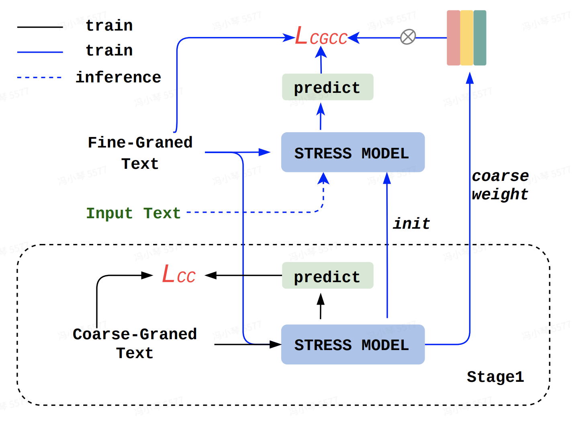
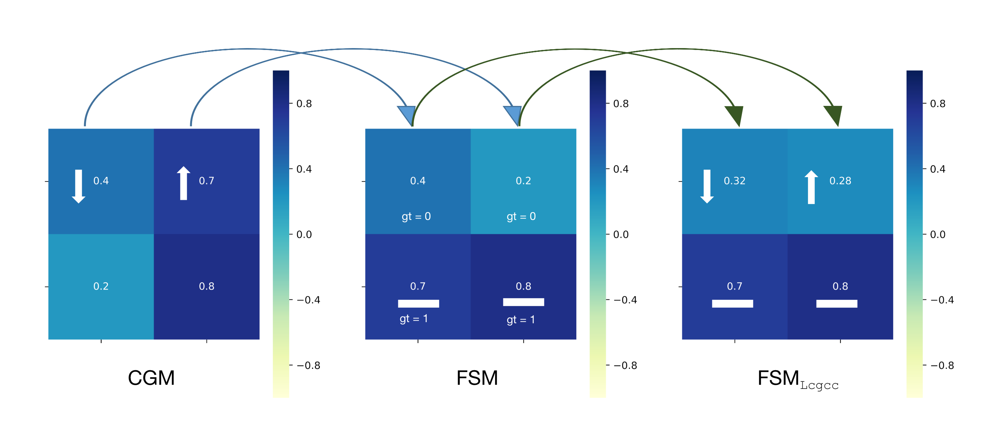

Stress is essential to processing in text-to-speech(TTS). However,
there is currently no clear definition of stress, and it is challenging
to obtain available annotated data. This paper proposes a coarse-
grained to fine-grained two-stage stress model to demonstrate the
effectiveness of progressively granular stress prediction in speech
synthesis. The first stage builds a stress coarse-grained attention
model; the second stage builds a stress fine-grained attention model
combined with the auxiliary information provided by the coarse-
grained model. Our method has the following features: First, the
stress data is acquired in two stages to reduce the difficulty of data
acquisition. Second, introducing a two-stage granularity model can
effectively reduce the model deviation. Compared with the one-stage
stress model, the F1 score is also improved by 3%-4%. Third, the
stress model dramatically improves the Expression, Emotion, and
Naturalness of speech synthesis using ABTest and MOS subjective
evaluation on different models. Finally, combined with knowledge
distillation, the model achieves a user-acceptable balance in per-
formance and realizes an industrial-level deployment system Auto
Stress MeetVoice
1.1 The structure of the Stress Model:

1.2 The structure of Two-Stage Stress Pipeline:

2. Demos -- Comparison with other methods
Corresponding to section 3.2 in the paper, several samples synthesized by the proposed FSM and other compared methods on the stress task are listed below.
number
Original
FSM(Proposed)
GSM(Proposed)
User-define
GSM-random
demo1
Text: 什么？大个居然变成石头啦！(English: What? big guy turned to stone!)
demo2
Text: 谢谢您，我会争取做得更好，也欢迎你随时来提问。 (English: Thank you. I will try to do better, and you are welcome to ask questions at any time.)
demo3
Text: 新买的键盘，回车键就坏了。 (English: The new keyboard, the enter key is broken.)
demo4
Text: 这人如此狂妄。(English: This man is so arrogant.)
demo5
Text: 见到她能绕道走，就尽量绕道走。(English: When you see that she can make a detour, try to make a detour.)
demo6
Text: 孩子如果你害怕的话就别看吧。(English: Son, if you're scared, don't look.)
Short summary: It can be found that compared with Multi-R, CSET, and PB, the proposed CSPC can achieve a good balance between maintaining the target speaker's timbre and enriching the transferred emotional expression.
3. Demos -- Contribution Of Coarse-Grained Model
Corresponding to section 3.4.1 in the paper, samples synthesized by FSM and also FSM' variants that without GSM (w/o GSM) on the stress task are listed below.
number
w/o GSM
FSM (Proposed)
demo1
Text: 天哪！梦中的一切成真了！(English: My god! Everything in the dream came true!)
demo2
Text: 散散步，呼吸下新鲜空气，整个人都神清气爽了呢。(English: Take a walk and get some fresh air, i feel refreshed and refreshed.)
demo3
Text: 我的显示器又花屏了。(English: My monitor is blurred again.)
demo4
Text: 快跟我回去！(English: Come back with me!)
demo5
Text: 看见你我就想踹飞你。(English: When I see you, I want to kick you.)
Short summary: It can be found that the prosody compensation embedding can provide extra emotion information to the emotion embedding, and the proposed prosody compensation method can effectively improve the emotion transfer performance and mean-while maintain the target speaker’s voice.
4. Demos -- Contribution of Coarse-Grained supervised loss(L_cgce)

We can observe changes in Lcgce under the supervision of FSM
and CGM. We divide it into two groups according to the ground-truth
labels of the FSM. When the true label of FSM is 1, Lcgce will not
change; When the true label of FSM is 0, CGM will take effect, and
the direction of Lcgce change is consistent with CGM. Note that we
do not perform CGM supervision at all locations because we want
to ensure the persistence of CGM supervision information and the
diversity of the FSM itself.
Corresponding to section 3.4.2 in the paper, samples synthesized by FSM and also FSM' variants that without GSM supervised loss(w/o L_cgce) on the stress task are listed below.
number
w/o L_cgce
FSM (Proposed)
demo1
Text: 啊!真残忍！(English: Aah! How cruel!)
demo2
Text: 姐姐说话温柔细声细气的，给人的感觉态度很好哦。(English: The elder sister speaks softly and softly, which gives people the impression that the attitude is very good.)
demo3
Text: 我的显示器又花屏了。(English: My monitor is blurred again.)
demo4
Text: 还有什么事！(English: Is there anything else!)
demo5
Text: 我受不了了，赶紧滚！(English: I can't take it anymore. Get out of here!)
Short summary: It can be found that in terms of emotional expressiveness, CSPC significantly outperforms the variant w/o GC without significant influence on speaker similarity.
5. Additional demos -- Stress demo on paragraph TTS
Following samples are synthesized with stress prediction for long text.
Short summary: It can be found that the model we proposed can be well generalized to the new target speaker who only has a small amount of data through simple fine-tuning, which transfers the emotion to the new target speaker while maintaining the target speaker’s timbre.